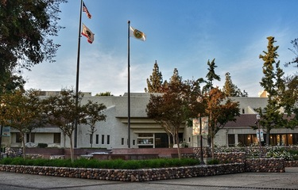

Portfolio



My name is Anselmo Aispuro. I am currently a student at the University of California Riverside who is pursuing a Media and Cultural Studies degree. I would like to use that degree in order to land a career in communications and work with media. I don’t have much experience in this field yet, but I’ve attended a couple of media events. This is all thanks to my mother. She works in the field of public relations. Growing up I was able to accompany her to her work events and seeing firsthand what it’s like to deal with media inspired me to pursue a similar career. I would also like to mention that I had an internship where I worked for the City of Chino’s City Hall. I did this during high school, and it showed me what professional level work was like. I worked the front desk, attended guests, answered calls, sat in meetings, and helped them renovate their website.
I am currently working a part time job at Harkins Theatres and I’ve been able to gain valuable skills from it. I started working there my senior year of high school and I will soon hit my 2-year anniversary. Working there has developed my teamwork skills, critical thinking skills, social skills, and has taught me quite a lot about customer service. I try my best to provide our guests with good customer service by carrying a positive attitude. All of these skills have had a positive effect on me because they’re essential in almost any field of work. I hope to continue working there until I graduate from UCR and I also hope to grow more with this company.
• Worked the front desk
• Answered phone calls
• Renovated their website
• Sat in staff meetings